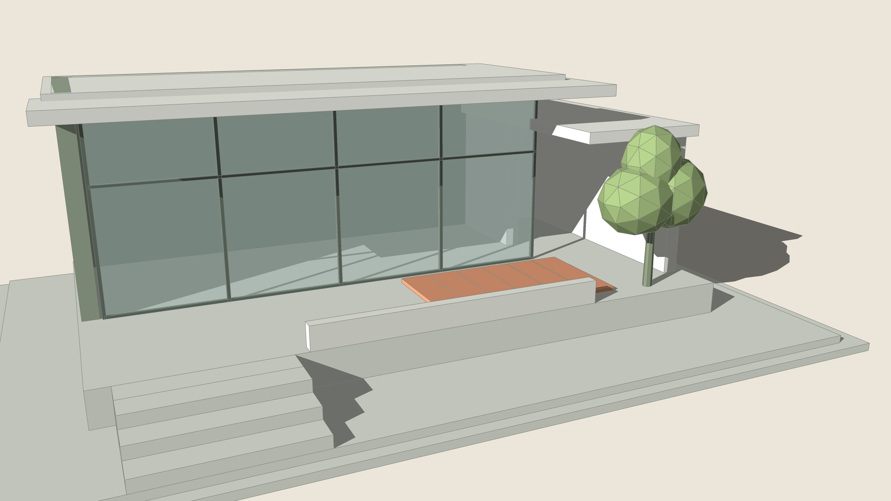
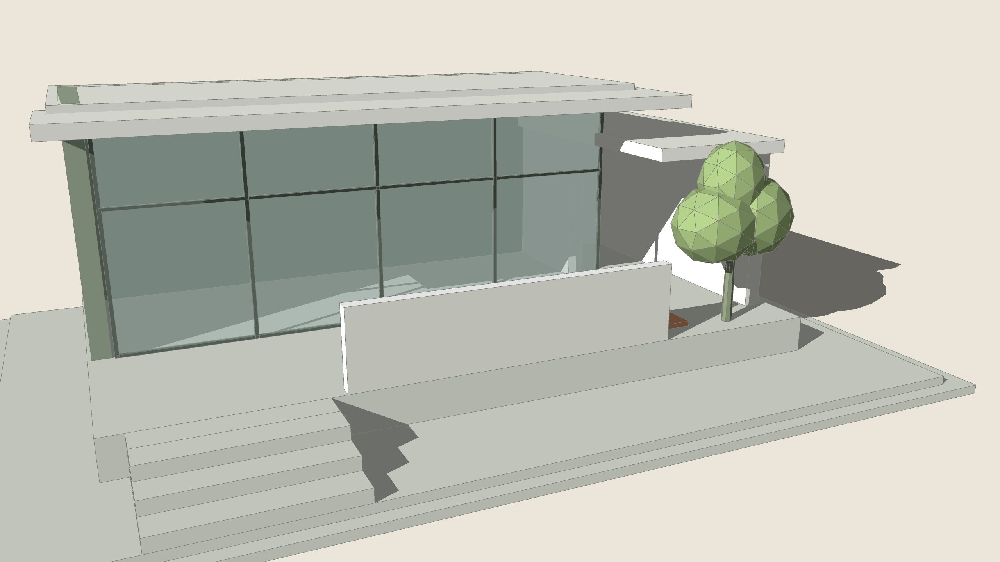
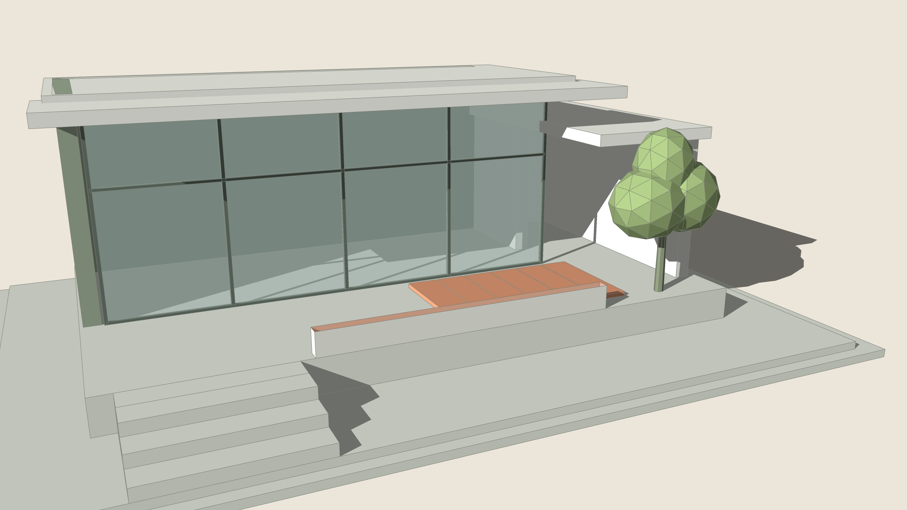

One Push/Pull for everything, in twelve modes: Push/Pull, Multi Face, Joint Push, Push to Face, Push to Object, Thicken, Taper, Offset + Push, Copy + Push, Symmetric, Axis and Repeat. It also pushes a face inside a closed group without opening it, keeps the paint of the faces it continues, and can step the distance by 10, 50 or 100 mm.


BeforeAfter